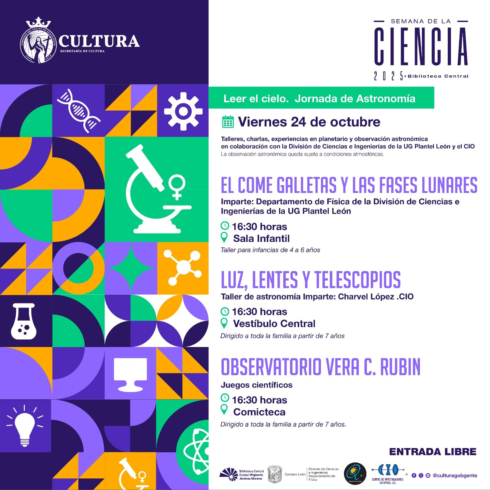

Jornada realizada · Semana de la Ciencia 2025
Semana de la Ciencia 2025
Talleres, charlas, experiencias en planetario y observación astronómica en colaboración con la División de Ciencias e Ingenierías de la UG, Plantel León, y el CIO.

Imparte: Departamento de Física de la División de Ciencias e Ingenierías de la UG, Plantel León
Sala Infantil
Taller de astronomía.
Imparte: Charvel López
Centro de Investigaciones en Óptica (CIO)
Vestíbulo Central
Comicteca
Presenta: Trish Luna
Astrofísicos en Acción
Sala José Vasconcelos
Vive una noche mágica explorando el cielo estrellado en nuestro planetario. Una actividad diseñada para que niñas, niños y sus familias descubran de manera divertida y cercana los secretos del universo.
Pérgola
Al término de la conferencia, observación con los telescopios de la Biblioteca Central, la División de Ciencias e Ingenierías de la UG Plantel León y el CIO.
Terraza Sur
Sujeta a condiciones atmosféricas.
Organizaron la Secretaría de Cultura de Guanajuato, la Biblioteca Central Estatal Wigberto Jiménez Moreno, la División de Ciencias e Ingenierías de la UG (Campus León), Astrofísicos en Acción y el CIO. Entrada libre.